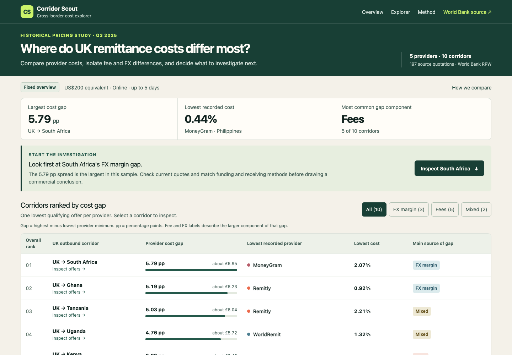
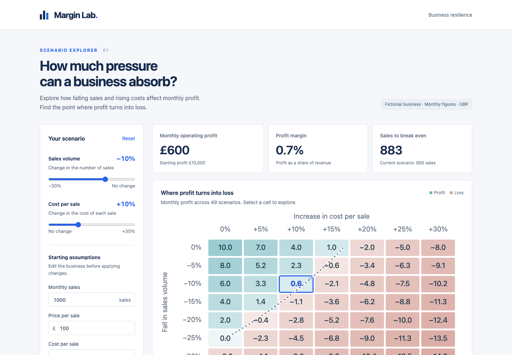

01 / Selected work
Questions into practice.
Research and independent projects.
The question, the work, and what came of it.

Explore the live project ↗02 / Data into a usable tool
Corridor Scout
A public dashboard comparing recorded remittance costs across ten UK outbound corridors. A Python pipeline turns the World Bank workbook into comparable provider and corridor views.
Python / React / TypeScript / Public data
The thinking behind it +
The question
How can a large pricing workbook become a clear comparison of the cost of sending money abroad?
My contribution
I built a five-step pipeline covering download, schema and period validation, cleaning, analysis and publication to dashboard data, alongside an interactive web interface.
The outcome
A published dashboard and documented source code. The included Q3 2025 dataset contains 394 amount observations from 197 transparent quotations across five providers.
The boundary
These are historical mystery-shopping quotations, not live prices or completed transfers. Fee and exchange-rate comparisons are diagnostic, not causal.
View source & documentation ↗
Explore the live project ↗03 / An interactive experiment
Margin Lab
An AI-assisted portfolio website exploring how sales and unit costs affect a fictional business. Editable assumptions make profit, margin and break-even relationships visible.
Scenario analysis / Interactive visualisation / AI-assisted
The thinking behind it +
The question
How can an interactive interface make the effect of changing business assumptions easier to explore?
The project
Margin Lab compares 49 combinations of sales declines and unit-cost increases, with operating profit, margin and break-even outputs.
How it was made
This is an AI-assisted portfolio experiment. Implementation and recorded technical checks were performed with an AI coding assistant.
The boundary
The business is fictional. The scenarios illustrate relationships between assumptions; they are not forecasts or evidence of commercial results.
View source & documentation ↗
Research case studyWhen an assumption changes the answer.+
The challenge
Investigate recurring weekly patterns and longer-term variation in COVID-19 transmission, including their interaction with generation time: the interval between one infection and the next.
The decision
I identified that a daily time step allowed at most one compartment transition per day. That changed the model’s built-in generation time and its weekly-pattern results.
The work
I tested an individual transition-probability simulation, visualised the difference and checked the literature. After discussion with my supervisor, I revised the time step and model structure.
The outcome & ownership
The fine-step specification was adopted for the manuscript in preparation. My contribution included formal analysis, visualisation, a reproducible R/GitHub workflow and original drafting, with shared software and methodology. I did not prepare the underlying or processed data.
MSc research placement · Big Data Institute, University of Oxford · First-author manuscript in preparation; not yet submitted or published.